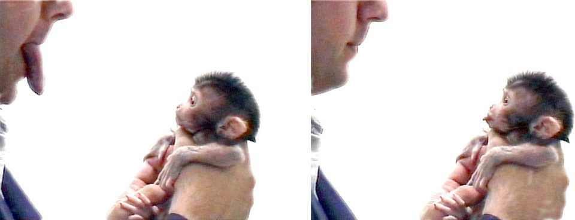

What emotions are
Emotions are the body's responses to situations that matter for our survival or wellbeing. They combine a bodily reaction (the heart races, we sweat, our facial expression changes), a subjective experience (the feeling of fear or joy) and an urge to act (flee, approach, attack). Charles Darwin observed in 1872 that the expressions of basic emotions are similar across cultures and in other animals.
Far from being the opposite of reason, emotions are essential for making good decisions.
The emotional brain
There is no single "emotion centre", but a network:
| Structure | Role |
|---|---|
| Amygdala | Detects threats and what matters; fear; gives memories their emotional charge |
| Hypothalamus | Sets off the body's response (hormones, autonomic system) |
| Insula | Senses the body's internal state; disgust, empathy |
| Anterior cingulate | Conflict, emotional pain, motivation |
| Prefrontal cortex (orbitofrontal and ventromedial) | Regulates emotions and gives them meaning; decides |
| Nucleus accumbens and dopamine | Reward, pleasure, desire |
| Hippocampus | The context of emotions |
See hippocampus and limbic system.
Two roads to fear
Joseph LeDoux described how information about danger reaches the amygdala by two routes: a fast, rough one, straight from the thalamus, which makes us jump at something that looks like a snake before we know what it is; and a slow, precise one through the cortex, which tells us it was a stick. Better safe than sorry.
Emotion and reason: Phineas Gage
In 1848 an iron rod passed through the frontal lobe of Phineas Gage, an American railway foreman. He survived, but his character changed: he became impulsive, irreverent and unable to plan. More than a century later, Antonio Damasio studied patients with similar injuries: they reasoned well in theory but made disastrous decisions in real life. He proposed the somatic marker hypothesis: emotions, through signals from the body, mark options as good or bad and help us decide. Without them, we decide worse.
Mirror neurons


In the 1990s Giacomo Rizzolatti and his team in Parma found neurons in monkeys that fired both when performing an action and when watching someone else perform it: mirror neurons. It was proposed that they take part in imitation and in understanding the actions and intentions of others. They do play a role in human empathy, but a more limited one than was popularly claimed at the time.
Regulating emotions
The prefrontal cortex can modulate the amygdala's response. Strategies such as reappraising a situation, putting a name to what you feel, slow breathing, exercise and sleep help regulate emotions. See stress and the brain.
When disease changes emotions
- Frontotemporal dementia: loss of empathy, disinhibition, apathy. It is often the first symptom.
- Stroke: up to a third of patients develop depression afterwards; also emotional lability (crying or laughing that cannot be controlled).
- Parkinson's: depression, anxiety and apathy are common, sometimes before the motor symptoms.
- Multiple sclerosis, head injuries, temporal lobe epilepsy (fear as an aura) and autoimmune encephalitis.
These changes are part of the disease, not "personality", and many can be treated.
Sources
- Damasio AR. Descartes' Error. Putnam; 1994.
- LeDoux JE. Emotion circuits in the brain. Annu Rev Neurosci. 2000;23:155-84.
- Rizzolatti G, Craighero L. The mirror-neuron system. Annu Rev Neurosci. 2004;27:169-92.
- Hackett ML, Pickles K. Part I: frequency of depression after stroke: an updated systematic review and meta-analysis. Int J Stroke. 2014;9:1017-25.